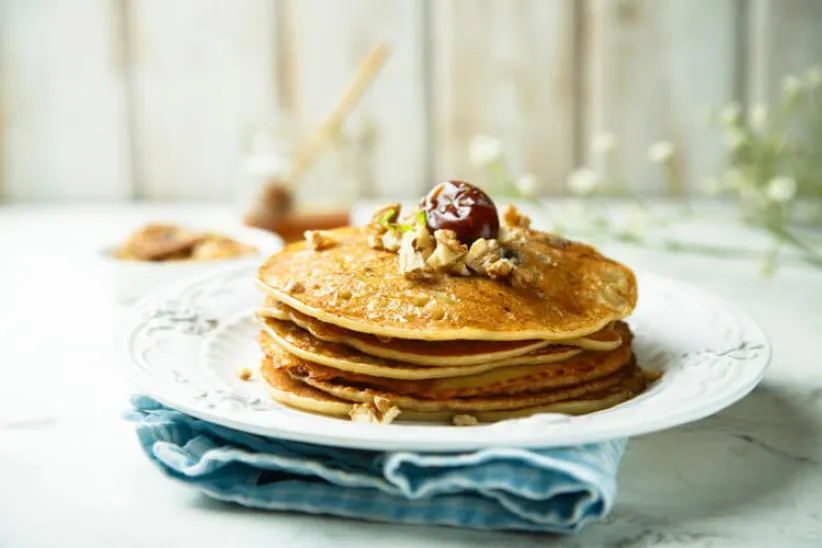

Es Pisang Ijo
Bahan dan cara untuk membuat Es Pisang Ijo. Pisang Kepok secukupnya, 115 gram Tepung Protein Sedang ...

Pancake Kurma
Bahan dan cara untuk membuat Pancake Kurma. 2 telur, 2 sdm gula pasir, 1 sachet Sasa Cair + 140 ...
Kolak Pisang
Bahan dan cara untuk membuat Kolak Pisang, 100 ml Gula Merah, 65 ml Sasa Santan Cair Omega-3 ...

Bubur Kacang Ijo
Bahan dan cara untuk membuat Bubur Kacang Ijo. 250 gr kacang hijau, 120 gr gula merah, 120 gr gula pasir ...